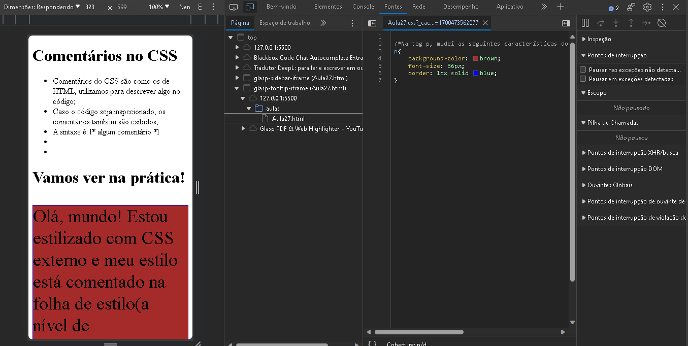

Comentários no CSS
-
Comentários do CSS são como os de HTML, utilizamos para descrever algo
no código;
-
Caso o código seja inspecionado, os comentários também são exibidos;
- A sintaxe é: l* algum comentário *l
Vamos ver na prática!
Olá, mundo! Estou estilizado com CSS externo e meu estilo está comentado
na folha de estilo(a nível de programação)
Obs: os comentários do CSS ficam em área distinta as do HTML.

Início